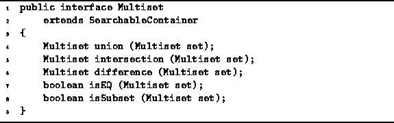

Data Structures and Algorithms
with Object-Oriented Design Patterns in Java
Data Structures and Algorithms
with Object-Oriented Design Patterns in JavaA multiset is a set in which an item may appear more than once. That is, whereas duplicates are not permitted in a regular set, they are permitted in a multiset. Multisets are also known simply as bags .
Sets and multisets are in other respects quite similar:
Both support operations to insert and withdraw items;
both provide a means to test the membership of a given item;
and both support the basic set operations
of union, intersection, and difference.
As a result, the Multiset interface
is essentially the same as the Set interface
as shown in Program  .
.

Program: Multiset interface.
 Copyright © 1998 by Bruno R. Preiss, P.Eng. All rights reserved.
Copyright © 1998 by Bruno R. Preiss, P.Eng. All rights reserved.